<!doctype html>
<html lang="en">
<head>
  <meta charset="utf-8">
  <meta name="viewport" content="width=device-width, initial-scale=1">
  <title>arxiv digest — 2026-07-18</title>
  <style>
:root {
  --bg: #ffffff;
  --fg: #1f2328;
  --muted: #59636e;
  --border: #d0d7de;
  --card: #f6f8fa;
  --link: #0969da;
}
body {
  max-width: 980px;
  margin: 0 auto;
  padding: 2rem 1rem 5rem;
  font-family: -apple-system, BlinkMacSystemFont, "Segoe UI", Helvetica, Arial, sans-serif;
  line-height: 1.55;
  color: var(--fg);
  background: var(--bg);
}
a { color: var(--link); }
img { max-width: 100%; height: auto; }
pre, code { background: var(--card); border-radius: 6px; }
pre { padding: 1rem; overflow-x: auto; }
blockquote { border-left: 4px solid var(--border); padding-left: 1rem; color: var(--muted); }
details { margin: 0.6rem 0; }
summary { cursor: pointer; font-weight: 600; }
.paper-figures-scroll {
  display: flex;
  gap: 1rem;
  overflow-x: auto;
  overscroll-behavior-x: contain;
  padding: 0.75rem 0.25rem 1rem;
  margin: 1rem 0 1.25rem;
  border-top: 1px solid var(--border);
  border-bottom: 1px solid var(--border);
  scroll-snap-type: x proximity;
}
.paper-figure-card {
  flex: 0 0 min(260px, 72vw);
  scroll-snap-align: start;
  background: var(--card);
  border: 1px solid var(--border);
  border-radius: 12px;
  padding: 0.55rem;
}
.paper-figure-card img {
  display: block;
  width: 100%;
  max-height: 240px;
  object-fit: contain;
  background: white;
  border-radius: 8px;
}
.paper-figure-caption {
  display: block;
  margin-top: 0.5rem;
  color: var(--muted);
  font-size: 0.85rem;
}
.figure-strip-hint {
  color: var(--muted);
  font-size: 0.9rem;
  margin-bottom: -0.3rem;
}
</style>
  <!-- MathJax: renders $...$ inline math and $$...$$ display math, plus
       \(...\) and \[...\]. Loaded from the official CDN; works offline
       once cached. Configured to skip code/pre blocks so arxiv IDs that
       look like dollar amounts don't get mangled. -->
  <script>
    window.MathJax = {
      tex: {
        inlineMath: [['$', '$'], ['\\(', '\\)']],
        displayMath: [['$$', '$$'], ['\\[', '\\]']],
        processEscapes: true,
        processEnvironments: true
      },
      options: {
        skipHtmlTags: ['script', 'noscript', 'style', 'textarea', 'pre', 'code'],
        ignoreHtmlClass: 'tex2jax_ignore',
        processHtmlClass: 'tex2jax_process'
      }
    };
  </script>
  <script id="MathJax-script" async
    src="https://cdn.jsdelivr.net/npm/mathjax@3/es5/tex-chtml.js"></script>
</head>
<body>
<header style="background-color: #333; color: white; padding: 15px; margin-bottom: 20px;">
  <h1 style="margin: 0; font-size: 24px;">
    <a href="https://ochelpan.github.io/arXiv_clean/" style="color: white; text-decoration: none;">Main</a>
  </h1>
</header>

<h1>Daily arXiv Report</h1>

<hr>
<p>
<a href="index.html">← Index</a>
 · <a href="papers_06.html">← Previous</a>
</p>
<hr>

<h2>Papers 121–127</h2>
<p><a id="paper-2607.15008"></a></p>
<h3 id="plug-flow-and-cavitation-in-rough-lubricated-contacts-molecular-dynamics-of-single-vs-two-component-fluids"><a href="http://arxiv.org/abs/2607.15008v1">Plug Flow and Cavitation in Rough Lubricated Contacts: Molecular Dynamics of Single- vs. Two-Component Fluids</a></h3>
<p><strong>Authors:</strong> Shubham Agarwal, Martin H. Müser<br>
<strong>Type:</strong> theory · <strong>Category:</strong> statistical mechanics · <strong>PDF:</strong> <a href="https://arxiv.org/pdf/2607.15008v1">https://arxiv.org/pdf/2607.15008v1</a><br>
<strong>Analysis basis:</strong> full PDF text, analyzed in chunks
<strong>Topic relevance:</strong> <code>non-equilibrium dynamics</code> <strong>3/5</strong> · <code>driven-dissipative phase transition</code> <strong>2/5</strong> · <code>non-equilibrium universality</code> <strong>2/5</strong> · <code>Frenkel-Kontorova</code> <strong>1/5</strong> · <code>Keldysh / 2PI / non-Gaussian methods</code> <strong>1/5</strong> · <code>analog quantum simulation</code> <strong>1/5</strong> · <code>correlated / nonlocal dissipation</code> <strong>1/5</strong> · <code>methods for driven-dissipative</code> <strong>1/5</strong></p>
<div class="figure-strip-hint">↔ Scroll figures horizontally</div>
<div class="paper-figures-scroll">
<figure class="paper-figure-card">
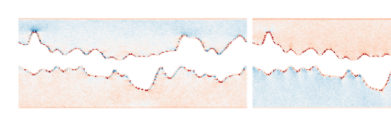
<figcaption class="paper-figure-caption"><b>Fig 1.</b> Figure 1: Residual stresses in the simulation blocks after equilibration σxx (left), σyy (center) and σzz (right). Tensile stress has a positive sign and is indicated in red while compressive is shown as blue. The color range was set to ±4 GPa for reasons of better vi- sualization. Maximum values for tensile and compressive stress are 4.7 GPa and −5.4 GPa for σxx, 4.5 GPa and −3.3 GPa for σyy and 4.3 GPa and −5.9 GPa for σzz.</figcaption>
</figure>
<figure class="paper-figure-card">
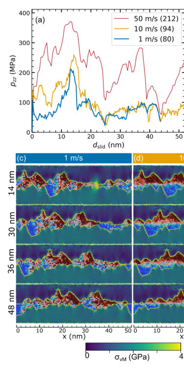
<figcaption class="paper-figure-caption"><b>Fig 2.</b> Figure 3: Water-lubricated contact at three sliding velocities. (a) Mean normal pressure pzz and (b) shear stress τ vs. slid-distance dslid. Mean values are given in parentheses in the legend. Configurational snapshots at four slid-distances are shown for (c) 50 m/s, (d) 10 m/s, and (e) 1 m/s. The corresponding slid-distance (dslid) is mentioned at the left. The copper blocks are colored by the von-Mises stress, the fluid by the normalized coarse-grained flow field ˜vx(x, z). The scalebar represent 10 nm.</figcaption>
</figure>
<figure class="paper-figure-card">
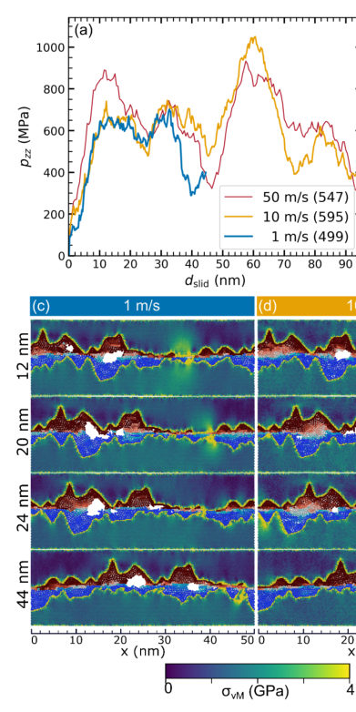
<figcaption class="paper-figure-caption"><b>Fig 3.</b> Figure 4: n-Dodecane-lubricated contact at three sliding velocities. (a) Mean normal pressure pzz and (b) shear stress τ vs. slid-distance dslid. Mean values are given in parentheses in the legend. Configurational snapshots at four slid-distances are shown for (c) 50 m/s, (d) 10 m/s, and (e) 1 m/s. The corresponding slid-distance (dslid) is mentioned at the left. The copper blocks are colored by the von-Mises stress, the fluid by the normalized coarse-grained flow field ˜vx(x, z).</figcaption>
</figure>
<figure class="paper-figure-card">
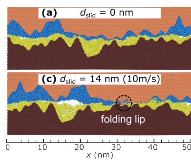
<figcaption class="paper-figure-caption"><b>Fig 4.</b> Figure 5: Interface evolution for mixed lubricated contact. Water is represented in blue near the top wall while n-dodecane in yellow near the bottom wall. The top wall moves towards the right while the bottom wall moves towards the left.</figcaption>
</figure>
<figure class="paper-figure-card">
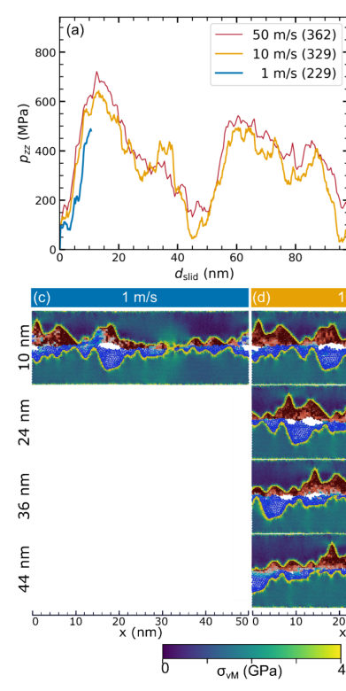
<figcaption class="paper-figure-caption"><b>Fig 5.</b> Figure 6: Mixed-lubricated contact at three sliding velocities. (a) Mean normal pressure pzz and (b) shear stress τ vs. slid-distance dslid. Mean values are given in parentheses in the legend. Configurational snapshots at four slid-distances are shown for (c) 1 m/s, (d) 10 m/s, and (e) 50 m/s. The corresponding slid-distance (dslid) is mentioned at the left. The copper blocks are colored by the von-Mises stress, the fluid by the normalized coarse-grained flow field ˜vx(x, z).</figcaption>
</figure>
</div>

<p><strong>Summary.</strong> This work uses molecular dynamics simulations to study friction and lubrication in rough contacts using single or mixed fluids. It reveals that fluid behavior is highly dependent on roughness gradients, leading to phenomena like plug flow and cavitation. The findings are crucial for understanding real-world tribology where continuum models fail.</p>
<p><strong>Why it may be interesting.</strong> While focused on classical mechanics, the analysis of non-equilibrium energy dissipation, stress localization, and phase transitions (cavitation/plug flow) touches upon concepts relevant to open quantum systems dynamics and thermalization in complex media.</p>
<details>
<summary>Detailed structure</summary>
<p><strong>Main problem.</strong> The study aims to bridge the gap between idealized smooth interface simulations and real, rough, load-bearing contacts in lubricated sliding.</p>
<p><strong>Main result.</strong> The mixed lubricant showed the lowest friction and maintained plug flow at low velocities, while cavitation was identified as a key mechanism for abrupt shear-stress release in single-component systems like water.</p>
<p><strong>Method.</strong> Non-equilibrium molecular dynamics (NEMD) simulations were employed to model the complex fluid-solid interactions under various loading conditions.</p>
<p><strong>Model / system.</strong> The system involves lubricated sliding between rough, deformable surfaces (modeled with self-affine profiles) using three fluids: water, n-dodecane, and their immiscible mixture.</p>
<p><strong>Key observables.</strong> Time-resolved normal and shear stresses, average friction, load-bearing capacity, local kinetic temperatures ($T_k$), and evidence of plug flow/cavitation.</p>
<p><strong>Important parameters / regimes.</strong> Lubricant type (single vs. mixed), sliding velocity (low to high speed regimes), surface roughness parameters, and confinement strength.</p>
<p><strong>Assumptions / limitations.</strong> The simulations use elastic coupling methods to match normal loading conditions across different lubricants; limitations include the inability of periodic boundary conditions to account for fluid replenishment from neighboring regions.</p>
<p><strong>Figures summary.</strong> Figures illustrate local temperature maps during asperity engagement and cavitation collapse, showing spatial heterogeneity in energy dissipation.</p>
<p><strong>Paper structure.</strong> The paper progresses by first establishing the physical model (rough contacts, three fluids), then analyzing single-component behavior (water vs. dodecane) to identify phenomena like cavitation, and finally detailing the unique tribological response of the mixed lubricant system.</p>
</details>
<details>
<summary>Abstract</summary>
<p>We present non-equilibrium molecular dynamics simulations of lubricated sliding between rough, deformable surfaces under conditions representative of boundary and mixed lubrication. One aim is to reduce the gap between highly idealized simulations of smooth interfaces and real, rough, load-bearing contacts. Another aim is to determine whether favorable tribological properties of two-fluid lubrication reported for solvated hydrophilic-hydrophobic polymer-brush interfaces can also be realized in rough contacts without brushes. To this end, we compare aqueous (water), hydrocarbon ($n$-dodecane), which has a similar equilibrium viscosity to water at ambient conditions, and immiscible two-fluid lubrication under identical geometric conditions. For the single-component lubricants, the simulations reproduce established trends: Water shows stronger speed dependence but reduced load-bearing capacity than $n$-dodecane, despite their similar ambient viscosities. Beyond this expected behavior, the simulations reveal that the combination of strong confinement and large height gradients can cause plug flow and cavitation after asperity collisions. For a high-surface-tension liquid like water, cavitation provides a mechanism for abrupt shear-stress release observable on scales much exceeding the size of the cavity. The mixed lubricant exhibits the lowest friction and material transfer, while maintaining plug flow to the lowest sliding velocity. It is also the only system in which folding lips form, occasionally developing into transient wear particles at high speeds.</p>
</details>
<p><sub><a href="#top">↑ back to top</a></sub></p>

<p><a id="paper-2607.15249"></a></p>
<h3 id="altermagnetic-spin-textures-coupled-to-superconductors-domain-wall-spin-triplet-superconductivity-and-supercurrent-induced-torques"><a href="http://arxiv.org/abs/2607.15249v1">Altermagnetic spin textures coupled to superconductors: Domain wall spin-triplet superconductivity and supercurrent-induced torques</a></h3>
<p><strong>Authors:</strong> Yasir Dar, Mathias S. Scheurer, Constantin Schrade<br>
<strong>Type:</strong> theory · <strong>Category:</strong> other · <strong>PDF:</strong> <a href="https://arxiv.org/pdf/2607.15249v1">https://arxiv.org/pdf/2607.15249v1</a><br>
<strong>Analysis basis:</strong> full PDF text, analyzed in chunks
<strong>Topic relevance:</strong> <code>Keldysh / 2PI / non-Gaussian methods</code> <strong>3/5</strong> · <code>spintronics-quantum-optics interface</code> <strong>3/5</strong> · <code>driven-dissipative phase transition</code> <strong>1/5</strong> · <code>exotic spin models in light-matter</code> <strong>1/5</strong> · <code>methods for driven-dissipative</code> <strong>1/5</strong></p>
<div class="figure-strip-hint">↔ Scroll figures horizontally</div>
<div class="paper-figures-scroll">
<figure class="paper-figure-card">
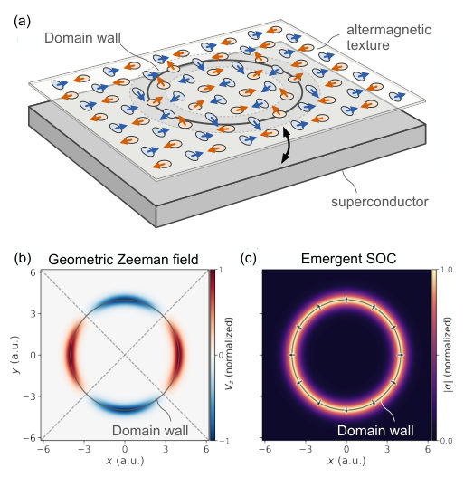
<figcaption class="paper-figure-caption"><b>Fig 1.</b> FIG. 1. Circular altermagnetic Néel domain wall proximitized by a superconductor. (a) Altermagnetic texture on a superconducting layer. Orange and blue ellipses denote the two sublattices (τz = ±). Arrows show the lo- cal in-plane Néel vector orientation. The circle marks the wall radius, R, and the shaded annulus marks the domain wall region where the Néel vector rotates. (b) Geometric Zee- man field, Vz(r), normalized by its maximum. The d-wave altermagnetic order gives a fourfold multipolar pattern. (c) Emergent spin-orbit coupling, α(r), normalized by its maxi- mum. It is localized at the wall and points radially. Panel (a) is schematic and not to scale.</figcaption>
</figure>
<figure class="paper-figure-card">
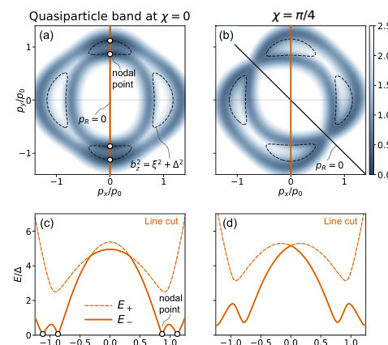
<figcaption class="paper-figure-caption"><b>Fig 2.</b> FIG. 2. Local quasiparticle spectrum for different points along a proximitized circular altermagnetic do- main wall. (a,b) Lower positive-energy quasiparticle band, E−(R, p)/∆, evaluated on the radial domain wall at the wall positions χ = 0 and χ = π/4. Dashed contours indicate the condition b2 z = ξ2 + ∆2. A nodal point additionally requires pR = 0, so that the emergent spin-orbit coupling vanishes. (c,d) At χ = 0, four nodal points appear in the quasiparticle spectrum. At χ = π/4, the quasiparticle spectrum is fully gapped. The momentum normalization is p0 = p</figcaption>
</figure>
<figure class="paper-figure-card">
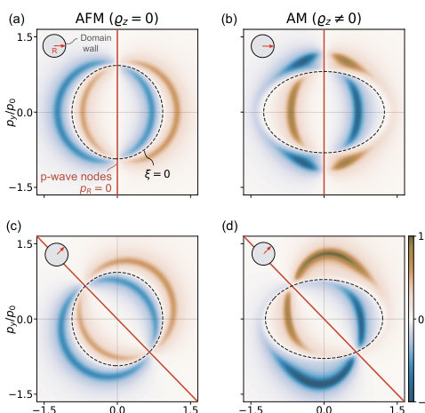
<figcaption class="paper-figure-caption"><b>Fig 3.</b> FIG. 3. Radial altermagnetic domain wall generates spin-polarized triplet correlations. Equal-spin triplet correlator, F↑↑(R, p), for a proximitized radial altermagnetic domain wall normalized to its maximum. Insets indicate the position, R, on the wall. (a,c) Antiferromagnetic limit, ϱz = 0. The emergent spin-orbit coupling generates a p-wave triplet component with nodes at pR = p · ˆR = 0 (red line). Additional nodes arise at ξ(R, p) = 0 (dashed line). (b,d) Altermagnetic case, ϱz ̸= 0. The p-wave triplet component is now modulated by the d-wave altermagnetic form factor. Hence, the additional nodes arise at ξ(R, p) −bz(R, p) = 0.</figcaption>
</figure>
<figure class="paper-figure-card">
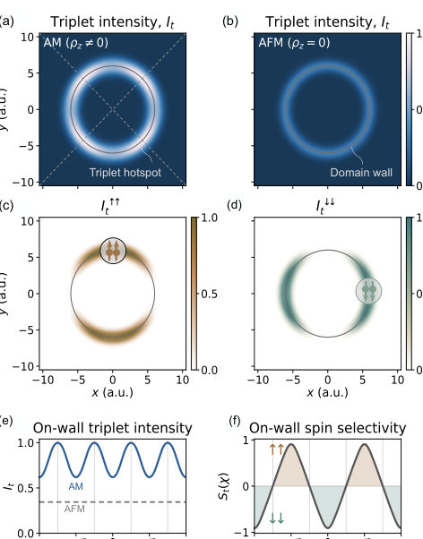
<figcaption class="paper-figure-caption"><b>Fig 4.</b> FIG. 4. Spin-polarized triplet hotspots at a proximi- tized radial altermagnetic domain wall. (a) Equal-spin triplet intensity, It(r), for a radial AM wall, ϱz ̸= 0. The wall generates triplets, while the d-wave AM splitting pro- duces a fourfold hotspot pattern. (b) Non-AM limit (ϱz = 0). Triplets remain localized at the wall, but the angular mod- ulation is absent. (c,d) Spin-resolved intensities: I↑↑ t peaks near χ = ±π/2, whereas I↓↓ t peaks near χ = 0, π. (e) On-wall cut of It, comparing AM and non-AM cases. (f) On-wall spin selectivity St(χ), with positive (negative) values denoting ↑↑ (↓↓) dominance.</figcaption>
</figure>
<figure class="paper-figure-card">
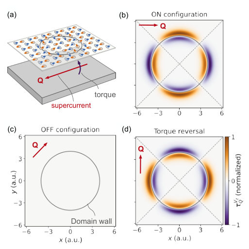
<figcaption class="paper-figure-caption"><b>Fig 5.</b> FIG. 5. Supercurrent-induced torque hotspots at a radial altermagnetic domain wall. (a) A supercurrent produces an out-of-plane torque on the in-plane Néel vector of the altermagnetic texture. (b) Altermagnetic torque contri- bution, τ Vz Q , for a current along the x direction. The torque is localized near the domain wall and has the quadrupolar pat- tern set by the d-wave order parameter. (c) For a diagonal current, χQ = π/4, the altermagnetic torque vanishes. (d) Rotating the current from x to y reverses the torque pattern. All torques are normalized by their maximum.</figcaption>
</figure>
</div>

<p><strong>Summary.</strong> This paper theoretically explores the proximity effect between superconductors and altermagnets with complex spin textures. It shows that while altermagnetism generally suppresses standard singlet pairing, spatial variations induce localized spin-triplet superconducting regions near domain walls. Crucially, it models how supercurrents exert torques on these magnetic textures, suggesting a pathway for local control of Cooper pairs using magnetism.</p>
<p><strong>Why it may be interesting.</strong> This work provides a detailed theoretical framework for engineering superconducting properties using magnetic textures, offering insights into how symmetry breaking in magnetism can dictate exotic pairing symmetries (like triplet superconductivity) at interfaces.</p>
<details>
<summary>Detailed structure</summary>
<p><strong>Main problem.</strong> The study investigates how spatially varying altermagnetic textures affect Cooper pair formation and induce unique superconducting properties, including spin-triplet pairing and supercurrent-induced torques.</p>
<p><strong>Main result.</strong> Altermagnetism suppresses conventional spin-singlet pairing but induces localized triplet components near domain walls; furthermore, supercurrents generate a quadrupolar torque that can deform the magnetic texture.</p>
<p><strong>Method.</strong> The analysis uses the Bogoliubov-de Gennes (BdG) Hamiltonian in conjunction with semiclassical approximations and gradient expansions of the free energy functional to derive superconducting properties.</p>
<p><strong>Model / system.</strong> The system is a heterostructure coupling an s-wave superconductor to an altermagnet exhibiting spatial textures, such as planar radial domain walls. The theory develops effective Hamiltonians incorporating emergent Zeeman fields and spin-orbit couplings arising from the magnetic order parameter variations.</p>
<p><strong>Key observables.</strong> Local quasiparticle spectra (nodal vs. gapped), induced triplet pairing components ($\mathbf{d}$ vector), superfluid stiffness coefficients ($ar{C}_{ij}^z$), and supercurrent-induced torques ($    au_Q$).</p>
<p><strong>Important parameters / regimes.</strong> Altermagnetic order parameter variations, domain wall structure, superconducting gap $\Delta$, and applied supercurrent momentum $Q$.</p>
<p><strong>Assumptions / limitations.</strong> The unperturbed superconductor is assumed to be in a conventional spin-singlet state. The analysis relies on semiclassical approximations (Wigner transform) and gradient expansions of the free energy functional.</p>
<p><strong>Figures summary.</strong> Figures schematically illustrate domain walls, emergent fields ($V_z(\mathbf{r})$, $\alpha(\mathbf{r})$), local quasiparticle spectra at different points, and the resulting superconducting correlations/triplet intensities.</p>
<p><strong>Paper structure.</strong> The paper systematically develops the effective Hamiltonian in a rotating frame, projects it onto low-energy subspaces to analyze pairing structure (singlet vs. triplet), and finally uses free energy functionals and gradient expansions to calculate superfluid stiffness and torques induced by supercurrents interacting with texture gradients.</p>
</details>
<details>
<summary>Abstract</summary>
<p>Motivated by the absence of sizable stray fields and the recently discovered highly non-trivial impact of altermagnetic textures on itinerant electrons, we here study the form of Cooper pairs in spatially varying altermagnets coupled to conventional $s$-wave superconductors. As a consequence of the detrimental impact of altermagnetism on spin-singlet pairing and the local symmetry reduction caused by textures in the magnetic order parameter, we show that superconductivity predominantly impacts the regions between altermagnetic domains. Focusing on a planar radial domain wall for concreteness, we show that emergent Zeeman and spin-orbit fields create spatially separated triplet hotspots and transitions between nodal and fully gapped superconducting regions, whose structure is set by both the domain wall and the altermagnetic order parameter. We also identify a reciprocal effect, where a supercurrent generates a quasiparticle-mediated quadrupolar torque that inherits the symmetry of the altermagnetic order. Our results show that accounting for spatial inhomogeneities in the altermagnetic order parameter is essential for an understanding of the superconducting proximity effect and suggest that hybrid systems of altermagnetic textures and superconductors offer unique opportunities for local engineering of Cooper pairs and for detecting altermagnetic order.</p>
</details>
<p><sub><a href="#top">↑ back to top</a></sub></p>

<p><a id="paper-2607.15120"></a></p>
<h3 id="growth-controlled-suppression-of-electrically-active-defects-in-crsbr"><a href="http://arxiv.org/abs/2607.15120v1">Growth-controlled suppression of electrically active defects in CrSBr</a></h3>
<p><strong>Authors:</strong> Sara R. Tulchinsky, Sergii Grytsiuk, Shen van Hassel, Iva Plutnarová, Rami Dana, David Sedmidubský, Zdenek Sofer, Malte Rösner, Frances M. Ross, Julian Klein<br>
<strong>Type:</strong> both · <strong>Category:</strong> other · <strong>PDF:</strong> <a href="https://arxiv.org/pdf/2607.15120v1">https://arxiv.org/pdf/2607.15120v1</a><br>
<strong>Analysis basis:</strong> full PDF text, analyzed in chunks
<strong>Topic relevance:</strong> <code>spintronics-quantum-optics interface</code> <strong>3/5</strong> · <code>Kondo &amp; dissipative impurity</code> <strong>1/5</strong> · <code>analog quantum simulation</code> <strong>1/5</strong> · <code>exotic spin models in light-matter</code> <strong>1/5</strong> · <code>non-equilibrium dynamics</code> <strong>1/5</strong></p>
<div class="figure-strip-hint">↔ Scroll figures horizontally</div>
<div class="paper-figures-scroll">
<figure class="paper-figure-card">
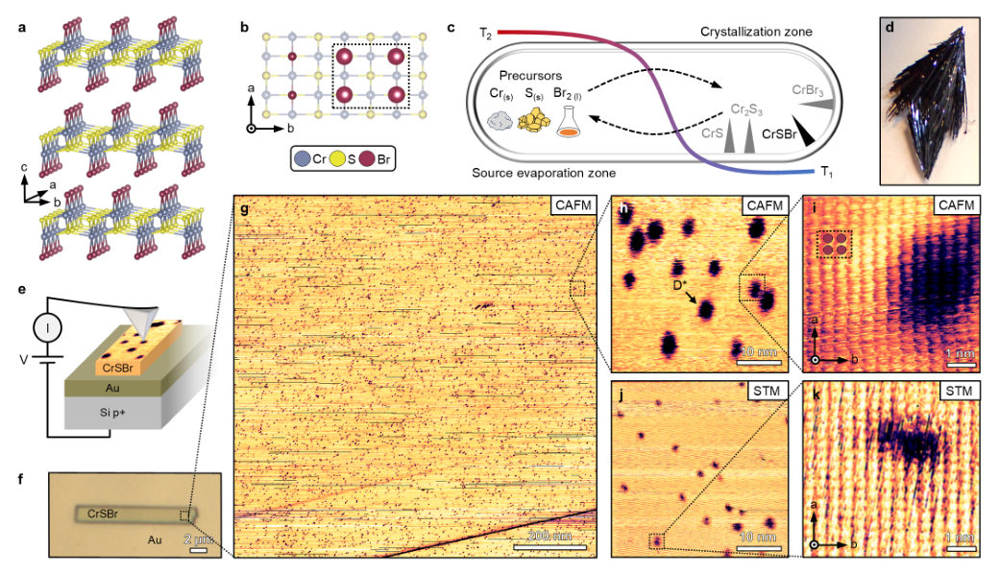
<figcaption class="paper-figure-caption"><b>Fig 1.</b> FIG. 1. Defect detection in bulk CrSBr by conductive atomic force microscopy. a, Schematic crystal structure of CrSBr. b, Top view of the CrSBr lattice, with the unit cell and surface Br atoms highlighted. c, Schematic of the CVT growth ampoule, showing the starting elements Cr(s), S(s), and Br2(l), the applied temperature gradient (∆T = T2 −T1), and the formation of CrSBr together with possible secondary phases, including Cr2S3, CrS, and CrBr3. d, Optical micrograph of a bulk CrSBr crystal. e, Schematic illustration of the CAFM measurement geometry and the electronic contrast associated with defects in CrSBr. f, Optical micrograph of an exfoliated CrSBr flake on a Au substrate. g,...</figcaption>
</figure>
<figure class="paper-figure-card">
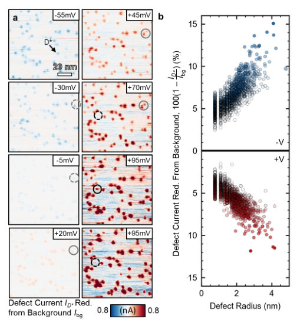
<figcaption class="paper-figure-caption"><b>Fig 2.</b> FIG. 2. Bias-dependent imaging and statistical analy- sis of the characteristic defect. a, Bias-dependent CAFM current maps acquired over a 100 × 100 nm2 area at biases ranging from −55 mV to +95 mV. Circles mark defects that change during scanning. Dotted circles indicate the absence of a defect, while solid circles indicate its presence. b, De- fect radius as a function of current reduction, extracted from negative- and positive-bias CAFM images acquired over a 500 × 500 nm2 area.</figcaption>
</figure>
<figure class="paper-figure-card">
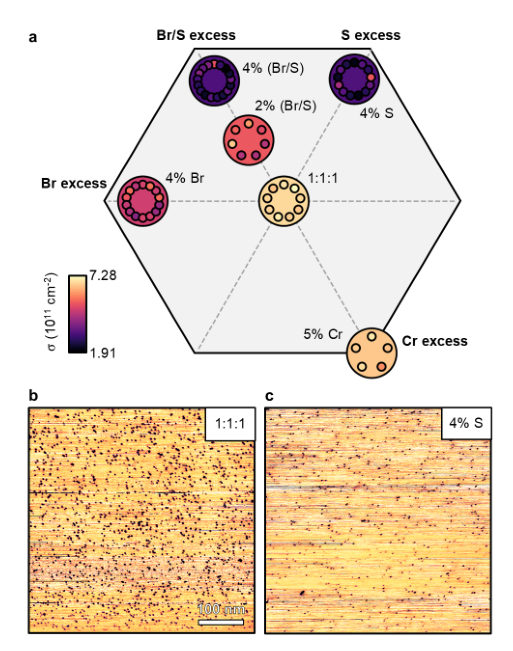
<figcaption class="paper-figure-caption"><b>Fig 3.</b> FIG. 3. Defect density as a function of elemen- tal excess during CrSBr growth. a, Ternary growth- composition map showing defect densities extracted from CAFM measurements. All samples were grown using a tem- perature profile of 800-900◦C. Small circles represent individ- ual measurements from 500 × 500 nm2 CAFM images, while large circles indicate the mean defect density for each growth condition. b,c, Representative CAFM current maps of CrSBr grown under stoichiometric conditions and with 4% S excess, respectively.</figcaption>
</figure>
<figure class="paper-figure-card">
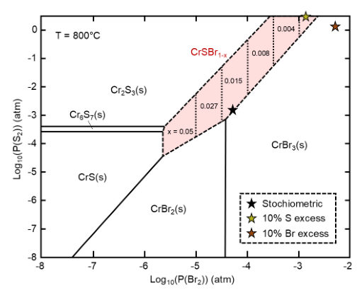
<figcaption class="paper-figure-caption"><b>Fig 4.</b> FIG. 4. Thermodynamic modeling of CrSBr growth. Calculated Kellogg-type phase stability diagram at 800◦C showing the thermodynamically favored condensed phases as a function of the S and Br partial pressures. The ⋆symbols mark the modeled growth conditions for the nominally stoi- chiometric composition and for compositions with 10% S or 10% Br excess.</figcaption>
</figure>
<figure class="paper-figure-card">
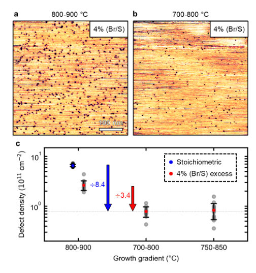
<figcaption class="paper-figure-caption"><b>Fig 5.</b> FIG. 5. Effect of growth temperature gradient on de- fect density. a,b, Representative CAFM current maps of CrSBr grown with 4% Br/S excess at temperature profiles of 800-900◦C and 700-800◦C, respectively. c, Statistical compar- ison of defect densities for three different growth temperature profiles: 800-900◦C, 700-800◦C, and 750-850◦C.</figcaption>
</figure>
</div>

<p><strong>Summary.</strong> This work demonstrates that the electrical defects in $    ext{CrSBr}$ can be actively controlled during crystal growth by tuning precursor stoichiometry and lowering absolute temperatures. By correlating CAFM measurements with DFT calculations, the authors provide practical guidelines to grow high-quality material with suppressed defect concentrations.</p>
<p><strong>Why it may be interesting.</strong> While focused on solid-state defects rather than quantum information protocols, the rigorous use of advanced characterization (CAFM/STM) combined with first-principles theory to link processing parameters to electronic properties is highly relevant for understanding defect engineering in novel quantum materials.</p>
<details>
<summary>Detailed structure</summary>
<p><strong>Main problem.</strong> The primary challenge is systematically controlling the type and density of electrically active defects within $  ext{CrSBr}$ single crystals to tailor its magneto-electrical properties.</p>
<p><strong>Main result.</strong> Defect concentration can be significantly suppressed (up to an order of magnitude) by optimizing growth conditions, specifically by using sulfur- or bromine-rich precursor stoichiometry and lowering the absolute growth temperature while maintaining the temperature gradient.</p>
<p><strong>Method.</strong> The study combines experimental characterization using Conductive Atomic Force Microscopy (CAFM) with theoretical validation via thermodynamic modeling and Density Functional Theory (DFT) calculations.</p>
<p><strong>Model / system.</strong> The physical system is $    ext{CrSBr}$, which crystallizes in the orthorhombic $Pmmn$ space group. Defects are studied using CAFM to measure electronic signatures, while DFT models predict local lattice distortions around vacancy complexes.</p>
<p><strong>Key observables.</strong> Defect density ($\sigma$), defect current relative to background ($I_{D^*}/I_{bg}$), and atomic displacements ($\Delta Q$) around vacancies.</p>
<p><strong>Important parameters / regimes.</strong> Growth temperature range ($700-900^\circ	ext{C}$), precursor stoichiometry (S/Br excess), and the applied bias voltage in CAFM measurements.</p>
<p><strong>Assumptions / limitations.</strong> The electronic contrast observed via CAFM is confirmed to be intrinsic to defects, not surface topography; the background current ($I_{bg}$) is approximated by histogram shifting.</p>
<p><strong>Figures summary.</strong> Figures detail defect maps from CAFM showing density variation with growth conditions (Fig 3), and DFT calculations illustrate lattice distortion ($\Delta Q$) around different vacancy types (Fig S14).</p>
<p><strong>Paper structure.</strong> The paper establishes the need for defect control, presents experimental results correlating growth parameters (stoichiometry, temperature) to measured defect suppression via CAFM, analyzes the electronic nature of defects using topography comparisons, and concludes with DFT modeling identifying the likely vacancy complex structure.</p>
</details>
<details>
<summary>Abstract</summary>
<p>In CrSBr, as in many crystalline materials, the type and density of defects are expected to strongly influence material behavior. Identifying the underlying atomic defect configurations and controlling their populations during growth are therefore important steps toward understanding and ultimately tailoring its rich magneto-electrical properties. However, systematic control of defects in CrSBr during chemical vapor transport (CVT) growth has not yet been established. Here, we correlate CVT growth conditions with defect concentrations measured using conductive atomic force microscopy (CAFM). We focus on a characteristic defect with a strong electronic fingerprint, labeled D<em>, and decrease its concentration by up to an order of magnitude through optimized growth conditions. We show that defect densities can be tuned by adjusting precursor stoichiometry, where sulfur- and bromine-rich conditions suppress defect formation, and by lowering the absolute growth temperatures while maintaining the same temperature gradient. Thermodynamic modeling and density functional theory calculations suggest that D</em> is most consistent with a sulfur-related vacancy complex rather than an isolated point defect. These results provide practical strategies for growing high-quality CrSBr with controlled defect densities.</p>
</details>
<p><sub><a href="#top">↑ back to top</a></sub></p>

<p><a id="paper-2607.14459"></a></p>
<h3 id="interlayer-sliding-direction-as-a-symmetry-selector-in-altermagnetic-bilayer-fe2ws4-switchable-anomalous-hall-and-anomalous-valley-hall-effects"><a href="http://arxiv.org/abs/2607.14459v1">Interlayer sliding direction as a symmetry selector in altermagnetic bilayer Fe2WS4: Switchable anomalous Hall and anomalous valley Hall effects</a></h3>
<p><strong>Authors:</strong> Quan Shen, Jianing Tan, Tao Yao, Wenhu Liao, Jiansheng Dong<br>
<strong>Type:</strong> theory · <strong>Category:</strong> other · <strong>PDF:</strong> <a href="https://arxiv.org/pdf/2607.14459v1">https://arxiv.org/pdf/2607.14459v1</a><br>
<strong>Analysis basis:</strong> full PDF text, analyzed in chunks
<strong>Topic relevance:</strong> <code>spintronics-quantum-optics interface</code> <strong>3/5</strong></p>
<div class="figure-strip-hint">↔ Scroll figures horizontally</div>
<div class="paper-figures-scroll">
<figure class="paper-figure-card">
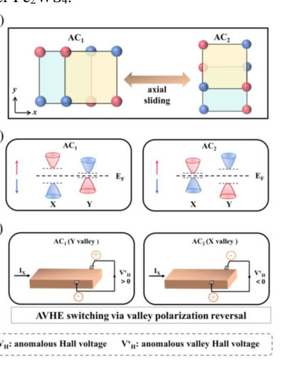
<figcaption class="paper-figure-caption"><b>Fig 1.</b> FIG. 1. Schematic illustration of sliding direction selective coupling in bilayer Fe2WS4. (a)</figcaption>
</figure>
<figure class="paper-figure-card">
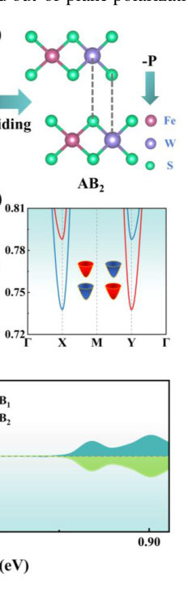
<figcaption class="paper-figure-caption"><b>Fig 2.</b> FIG. 2. (a),(c) Side views of the AB1 and AB2 configurations, which are connected by the 2100</figcaption>
</figure>
<figure class="paper-figure-card">
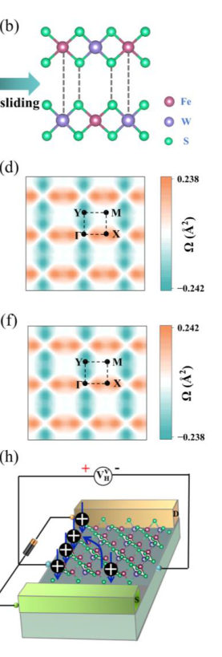
<figcaption class="paper-figure-caption"><b>Fig 3.</b> FIG. 3. (a),(b) Side views of the AC1 and AC2 configurations connected by axial interlayer</figcaption>
</figure>
</div>

<p><strong>Summary.</strong> This work demonstrates that in altermagnetic bilayer $ ext{Fe}_2   ext{WS}_4$, the direction of interlayer sliding acts as a structural symmetry selector. This mechanism allows researchers to independently switch between ferroelectric polarization and anomalous Hall effects (via diagonal sliding) or induce switchable valley polarization and anomalous valley Hall effects (via axial sliding). The findings establish a powerful, nonvolatile control principle for multifunctional 2D magnetic materials.</p>
<p><strong>Why it may be interesting.</strong> While focused on condensed matter magnetism, the concept of using structural degrees of freedom (interlayer sliding) as a nonvolatile switch for multiple quantum responses (FE, spin, valley Hall effects) is highly relevant to designing advanced quantum materials.</p>
<details>
<summary>Detailed structure</summary>
<p><strong>Main problem.</strong> The challenge is achieving nonvolatile and selective control over intertwined degrees of freedom (spin, valley, ferroelectricity) in altermagnetic materials without external mechanical deformation.</p>
<p><strong>Main result.</strong> The direction of interlayer sliding acts as a symmetry-selective control knob, enabling the switching of both the Anomalous Hall Effect (AHE) via diagonal sliding and the Anomalous Valley Hall Effect (AVHE) via axial sliding.</p>
<p><strong>Method.</strong> First-principles calculations using DFT (VASP) were employed to model structural changes and calculate electronic properties like Berry curvature and anomalous conductivities.</p>
<p><strong>Model / system.</strong> The study focuses on the altermagnetic bilayer $    ext{Fe}_2   ext{WS}_4$, investigating four metastable stacking configurations derived from interlayer sliding: diagonal (AB1, AB2) and axial (AC1, AC2).</p>
<p><strong>Key observables.</strong> Anomalous Hall conductivity ($\sigma_{xy}$), Anomalous Valley Hall Effect (AVHE), out-of-plane ferroelectric polarization ($z_P$), spin texture, and valley polarization.</p>
<p><strong>Important parameters / regimes.</strong> The direction of interlayer sliding (diagonal vs. axial) is the key structural parameter controlling symmetry breaking.</p>
<p><strong>Assumptions / limitations.</strong> The study relies on first-principles calculations; the initial AA-stacked bilayer serves as the reference structure for analyzing sliding configurations.</p>
<p><strong>Figures summary.</strong> Figures illustrate the schematic switching mechanisms: diagonal sliding breaks inversion symmetry to switch AHE, while axial sliding preserves inversion but breaks valley symmetry to switch AVHE via Berry curvature analysis at X and Y valleys.</p>
<p><strong>Paper structure.</strong> The paper establishes the platform using first-principles methods. It then systematically analyzes two distinct sliding modes—diagonal and axial—showing how each mode selectively breaks different symmetries ($\mathcal{P}$ vs $xy_M$) to control specific transport phenomena (AHE vs AVHE).</p>
</details>
<details>
<summary>Abstract</summary>
<p>Altermagnets combine compensated collinear magnetic order with momentum-dependent spin splitting, offering a promising platform for coupling spin and valley degrees of freedom with ferroelectricity and Berry-curvature driven transport in the absence of net magnetization. However, achieving nonvolatile and selective control of these intertwined degrees of freedom remains a key challenge. Here, using first-principles calculations, we show that the direction of interlayer sliding serves as a symmetry selective control parameter in altermagnetic bilayer Fe2WS4. Diagonal sliding breaks inversion symmetry and produces two sliding ferroelectric states with opposite out-of-plane polarizations. Reversal of the ferroelectric polarization switches the momentum-dependent spin texture and reverses the anomalous Hall conductivity, revealing strong magnetoelectric coupling and enabling a ferroelectrically switchable anomalous Hall effect. In contrast, axial sliding preserves inversion symmetry but breaks the crystalline symmetry relating the X and Y valleys, leading to reversible valley polarization and a switchable anomalous valley Hall effect. These results establish the direction of interlayer sliding as a nonvolatile symmetry selector for controlling ferroelectricity, spin texture, valley polarization, and Hall transport responses in two-dimensional altermagnetic bilayers.</p>
</details>
<p><sub><a href="#top">↑ back to top</a></sub></p>

<p><a id="paper-2607.14417"></a></p>
<h3 id="confined-acoustic-phonon-mode-filtering-in-free-standing-nanocrystalline-silicon-membranes"><a href="http://arxiv.org/abs/2607.14417v1">Confined acoustic phonon mode filtering in free-standing nanocrystalline silicon membranes</a></h3>
<p><strong>Authors:</strong> Tiago E. C. Magalhães, Tânia M. Ribeiro, Oili Ylivaara, Jouni Ahopelto, Clivia M. Sotomayor Torres<br>
<strong>Type:</strong> experiment · <strong>Category:</strong> other · <strong>PDF:</strong> <a href="https://arxiv.org/pdf/2607.14417v1">https://arxiv.org/pdf/2607.14417v1</a><br>
<strong>Analysis basis:</strong> full PDF text, analyzed in chunks
<strong>Topic relevance:</strong> <code>non-equilibrium dynamics</code> <strong>2/5</strong> · <code>analog quantum simulation</code> <strong>1/5</strong> · <code>correlated / nonlocal dissipation</code> <strong>1/5</strong> · <code>driven-dissipative phase transition</code> <strong>1/5</strong> · <code>interference shaping light</code> <strong>1/5</strong> · <code>non-equilibrium universality</code> <strong>1/5</strong></p>
<div class="figure-strip-hint">↔ Scroll figures horizontally</div>
<div class="paper-figures-scroll">
<figure class="paper-figure-card">
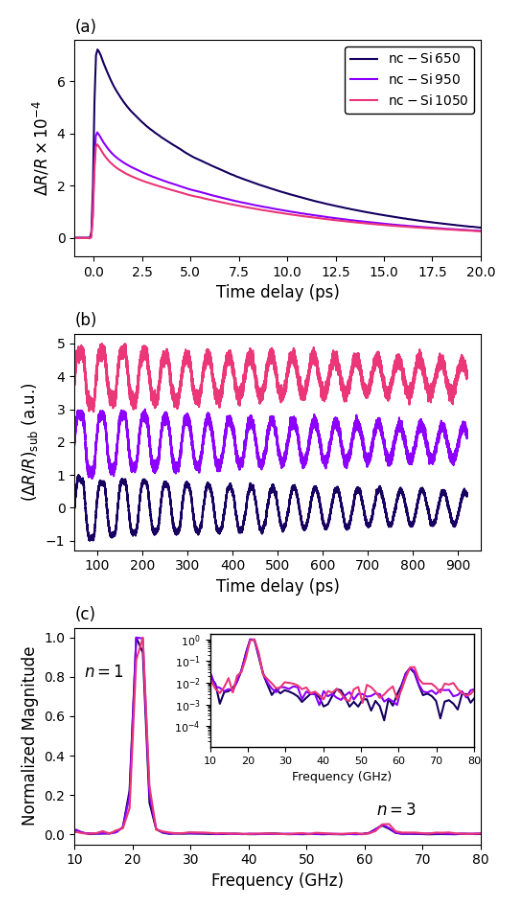
<figcaption class="paper-figure-caption"><b>Fig 1.</b> FIG. 1. Ultrafast acoustic phonon modes in nanocrystalline silicon. (a) First 20 picoseconds after pump excitation. (b) Coherent phonon oscillations after multiexponential fitting subtraction. (c) Magnitude of the FFT, normalized to the first mode, revealing the first and third modes. The inset shows the data in logarithm scale.</figcaption>
</figure>
<figure class="paper-figure-card">
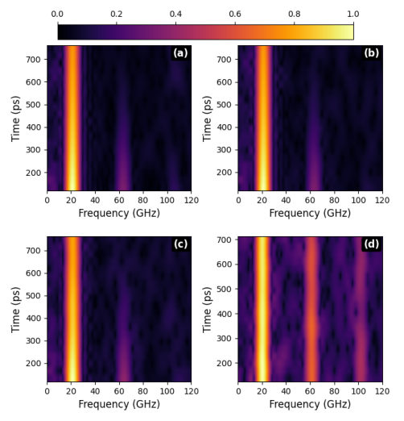
<figcaption class="paper-figure-caption"><b>Fig 2.</b> FIG. 2. Short-time Fourier transform of the background- subtracted reflectivity signal ∆R/Rsub. The color scale rep- resents the normalized square root of the magnitude |S(f, t)| of the short-time Fourier transform. (a) nc-Si 650, (b) nc-Si 950, (c) nc-Si 1050, and (d) c-Si. The fundamental (n = 1), third and fifth modes are clearly resolved in the crystalline sample, while a strong suppression of the higher-order mode is observed in the nanocrystalline membranes, where the fifth mode is hardly observed.</figcaption>
</figure>
<figure class="paper-figure-card">
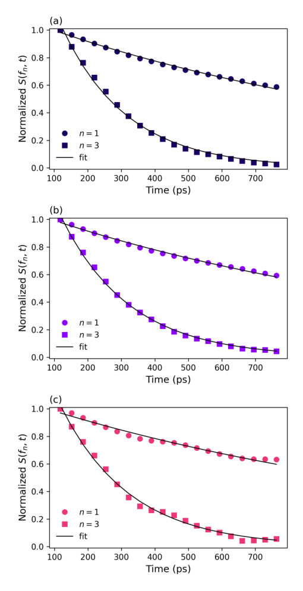
<figcaption class="paper-figure-caption"><b>Fig 3.</b> FIG. 3. Decay curves with fitting for modes n = 1 and n = 3 for the three nc-Si samples. (a) nc-Si 650. (b) nc-Si 950. (c) nc-Si 1050.</figcaption>
</figure>
<figure class="paper-figure-card">
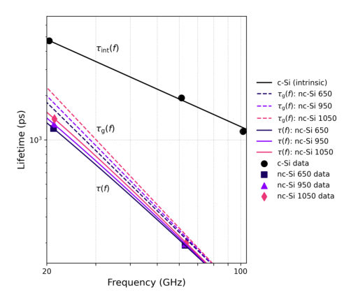
<figcaption class="paper-figure-caption"><b>Fig 4.</b> FIG. 4. Phonon lifetimes as a function of frequency for crys- talline and nanocrystalline silicon membranes. Symbols cor- respond to experimental data, while solid lines represent the total fitted model τ(f) = [τ −1 int (f)+Bf p]−1. The black circles denote the crystalline Si reference, and the solid black line corresponds to the intrinsic lifetime τint(f) given by Eq. (4).</figcaption>
</figure>
</div>

<p><strong>Summary.</strong> This work uses ultrafast spectroscopy to probe acoustic phonons in nanocrystalline silicon membranes. The researchers find that grain boundaries introduce a strong, frequency-dependent scattering mechanism that selectively filters out high-frequency phonon modes. This demonstrates that microstructure critically controls the vibrational properties and thermal transport of nanoscale materials.</p>
<p><strong>Why it may be interesting.</strong> While focused on condensed matter acoustics, the concept of spectral filtering due to structural disorder is analogous to engineered loss mechanisms in quantum waveguides or photonic bandgap structures, making it relevant to open quantum systems modeling.</p>
<details>
<summary>Detailed structure</summary>
<p><strong>Main problem.</strong> The study investigates how grain boundaries affect the propagation of confined acoustic phonons in free-standing nanocrystalline silicon membranes compared to bulk crystalline silicon.</p>
<p><strong>Main result.</strong> Grain boundaries act as an effective spectral filter, causing a strong, frequency-dependent suppression of higher-order (higher-frequency) acoustic phonon modes. This scattering is quantified by a power-law decay rate proportional to $f^2$.</p>
<p><strong>Method.</strong> Femtosecond time-resolved pump-probe transmission measurements were used to excite and monitor the coherent acoustic strain pulse in the membranes.</p>
<p><strong>Model / system.</strong> The physical system is free-standing nanocrystalline silicon (nc-Si) membranes, whose microstructure is controlled by thermal annealing. The analysis models phonon decay using Matthiessen's rule, separating intrinsic scattering from grain boundary contributions.</p>
<p><strong>Key observables.</strong> Phonon lifetimes ($    au(f)$), effective mean free path ($\Lambda(f)$), and the frequency dependence of the acoustic damping rate.</p>
<p><strong>Important parameters / regimes.</strong> Grain size distribution (controlled by annealing temperature), phonon frequency ($f$), and the scattering exponent $p$ (found to be $\approx 2$).</p>
<p><strong>Assumptions / limitations.</strong> The measurement assumes that reflectivity modulation directly tracks coherent phonon dynamics via thickness oscillation, neglecting photoelastic effects.</p>
<p><strong>Figures summary.</strong> Figures compare time-resolved data and STFT maps showing mode resolution differences between nc-Si and c-Si; Figure 3 shows decay curves for different modes across varying annealing temperatures.</p>
<p><strong>Paper structure.</strong> The paper follows a structure of presenting measurements on multiple samples (varying grain sizes), analyzing the frequency dependence of phonon damping, fitting the total decay rate to separate intrinsic and grain boundary contributions, and concluding with implications for thermal transport.</p>
</details>
<details>
<summary>Abstract</summary>
<p>We report the femtosecond time-resolved measurements of confined acoustic phonons in free-standing nanocrystalline silicon membranes and compare them directly with the crystalline silicon counterpart. While the latter exhibit well-resolved higher-order modes, a strong suppression of these modes is observed in nanocrystalline samples with grain size distribution controlled by thermal annealing. The suppression is strongly frequency dependent and becomes more pronounced as the phonon wavelength approaches the characteristic grain size. By separating intrinsic and extrinsic contributions to the phonon lifetime, we identify an additional frequency-dependent decay channel associated with grain boundaries, with scattering rates following a power-law dependence close to $f^{2}$, where $f$ is the frequency. The measured sound velocity is consistent with previous reports for nanocrystalline silicon and indicates an effective elastic response arising from multiple crystallographic orientations. These results establish coherent phonons as a sensitive probe of microstructure-dependent scattering in nanocrystalline materials and indicate that grain boundaries act as an effective spectral filter for high-frequency acoustic phonons.</p>
</details>
<p><sub><a href="#top">↑ back to top</a></sub></p>

<p><a id="paper-2607.15189"></a></p>
<h3 id="gyrotropy-from-extrinsic-geometry-in-twisted-materials"><a href="http://arxiv.org/abs/2607.15189v1">Gyrotropy from Extrinsic Geometry in Twisted Materials</a></h3>
<p><strong>Authors:</strong> Spenser Talkington, Eugene J Mele<br>
<strong>Type:</strong> theory · <strong>Category:</strong> other · <strong>PDF:</strong> <a href="https://arxiv.org/pdf/2607.15189v1">https://arxiv.org/pdf/2607.15189v1</a><br>
<strong>Analysis basis:</strong> full PDF text, analyzed in chunks
<strong>Topic relevance:</strong> <code>Keldysh / 2PI / non-Gaussian methods</code> <strong>2/5</strong> · <code>driven-dissipative phase transition</code> <strong>2/5</strong> · <code>methods for driven-dissipative</code> <strong>1/5</strong> · <code>non-equilibrium dynamics</code> <strong>1/5</strong> · <code>non-equilibrium universality</code> <strong>1/5</strong></p>
<div class="figure-strip-hint">↔ Scroll figures horizontally</div>
<div class="paper-figures-scroll">
<figure class="paper-figure-card">
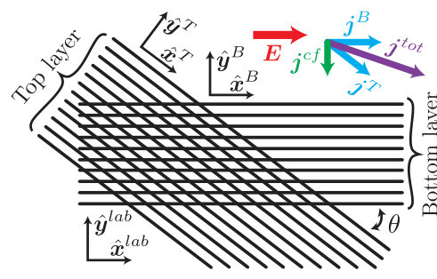
<figcaption class="paper-figure-caption"><b>Fig 1.</b> FIG. 1. A bilayer array of classical wires with relative twist θ between layers and no interlayer coupling exhibits finite gyrotropy, σc′ xy = σc xy in this model. This gyrotropy means that a uniform electric field can drive a transverse (magnetic dipole) current: E (red) is uniform in both layers, and so the antisymmetric electric field Ecf is zero, but jcf = jT −jB</figcaption>
</figure>
<figure class="paper-figure-card">
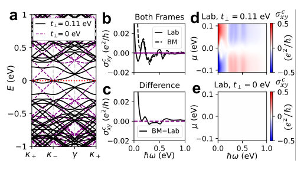
<figcaption class="paper-figure-caption"><b>Fig 2.</b> FIG. 2. Chiral optical conductivity of twisted bilayer graphene (TBG) at 2◦as a function of interlayer coupling t⊥. For real TBG, t⊥≈0.11 eV. (a) Band structure: t⊥= 0.11 eV is in black, t⊥= 0 is dashed in purple; note the emer- gence of the van Hove singularity between κ+ and κ−at finite t⊥. Chemical potential is at charge neutrality (dotted red line). (b-c) Lab and BM frame gyrotropies σc xy for µ = 0. The lab frame response has peaks corresponding to inter-van Hove singularity transitions. The BM frame has an additional spurious contribution which emerges from mixing longitudi- nal total and counterflow responses into the gyrotropy which is particularly visible when the difference of σc...</figcaption>
</figure>
<figure class="paper-figure-card">
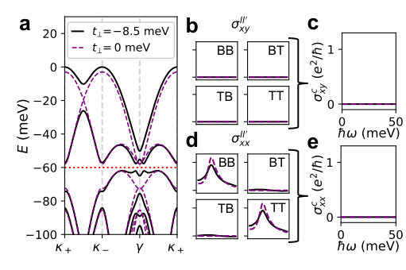
<figcaption class="paper-figure-caption"><b>Fig 3.</b> FIG. 3. Twisted bilayer MoTe2 lacks chiral optical activity in the continuum model. (a) Band structure at 5◦for interlayer tunneling, t⊥, equal to its physical value (black), and to zero (purple); the chemical potential µ = −60 meV is indicated by the dotted red line. (b-c) Layer-resolved and chiral σxy both exactly vanish due to the combination of C3z, T and accidental antiunitary layer-exchange symmetry Λ as detailed in the main text. (d-e) Layer-resolved σxx is non-vanishing, but C2x constrains σT T xx = σBB xx and Onsager T reciprocity ensures σT B xx = σBT xx ; therefore σc xx vanishes.</figcaption>
</figure>
<figure class="paper-figure-card">
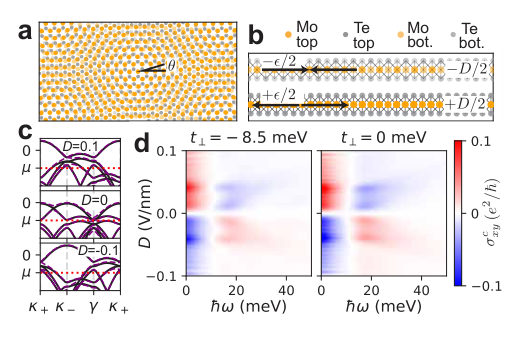
<figcaption class="paper-figure-caption"><b>Fig 4.</b> FIG. 4. Chiral optical activity can appear in twisted bilayer MoTe2 under weak heterostrain ϵ in the presence of a displace- ment field D. Heterostrain breaks C3z, but this is insufficient to enable optical gyrotropy as λτzλ−1 = −τz imposes that the gyrotropy is odd in D and so at D = 0 the response is zero. (a) Top view of bilayer MoTe2 with a 5◦relative twist and 0.1% heterostrain. (b) Side view of zigzag direction il- lustrating strain direction and displacement field. (c) Band structure for select displacement fields. Chemical potential µ = −60 meV is indicated in red, and as before black lines are for the physical t⊥, while dashed purple lines are for the decoupled bilayer. (d) Chiral...</figcaption>
</figure>
</div>

<p><strong>Summary.</strong> This paper investigates gyrotropy in twisted materials like graphene and MoTe2 to distinguish between effects arising purely from the material's physical geometry versus those stemming from its electronic band structure. By analyzing symmetry constraints and comparing results across different theoretical frames, the authors prove that geometric contributions can be substantial, necessitating careful separation of these two sources for accurate physical interpretation.</p>
<p><strong>Why it may be interesting.</strong> While focused on condensed matter transport, the rigorous separation of geometry from electronic structure is a fundamental concept applicable to any system where external boundary conditions or physical embedding dictate observable quantum responses (e.g., topological insulators in curved geometries).</p>
<details>
<summary>Detailed structure</summary>
<p><strong>Main problem.</strong> The central goal is to rigorously separate the contribution of extrinsic physical geometry from the intrinsic electronic structure when analyzing chiral optical gyrotropy in twisted materials.</p>
<p><strong>Main result.</strong> The study demonstrates that a significant portion of the observed gyrotropy can arise purely from the system's geometric arrangement (extrinsic) rather than solely from interlayer electronic coherence (intrinsic).</p>
<p><strong>Method.</strong> The authors employ symmetry analysis, layer-resolved current relations, and comparison between conductivities calculated in the physical laboratory frame versus the local Bistritzer-MacDonald frame.</p>
<p><strong>Model / system.</strong> The primary systems studied are twisted bilayer graphene (TBG) and twisted bilayer MoTe2. The analysis uses continuum models derived from low-energy Hamiltonians for moiré superlattices.</p>
<p><strong>Key observables.</strong> Gyrotropy ($\sigma_{c,xy}$), chiral optical conductivity, total vs. counterflow conductivities, and the difference between lab-frame and BM-frame responses.</p>
<p><strong>Important parameters / regimes.</strong> Twist angle ($  heta$), interlayer coupling strength, and strain/displacement fields (for TMDs).</p>
<p><strong>Assumptions / limitations.</strong> The analysis relies on symmetry constraints ($C_{3z}, T$) to decompose the total response into geometric and electronic components; it also highlights discrepancies between different theoretical frames.</p>
<p><strong>Figures summary.</strong> Figure 1 illustrates the purely geometric gyrotropy in a classical bilayer array of 1D wires, showing a non-zero transverse counterflow current driven by an electric field.</p>
<p><strong>Paper structure.</strong> The paper progresses from a minimal classical model to general moiré bilayers (TBG) using continuum models, emphasizing frame dependence. It then applies these concepts to TMDs ($    ext{MoTe}_2$) to show geometric effects dominating under strain.</p>
</details>
<details>
<summary>Abstract</summary>
<p>Gyrotropy in twisted bilayer graphene can be used as a signature of interlayer electronic coherence. Gyrotropy can emerge in the absence of interlayer coupling in time-reversal symmetric bilayer systems. This gyrotropy originates from the extrinsic geometry associated with the physical geometry of the system and is independent of the structure of the electronic states. We first illustrate this effect for a purely classical bilayer array of one-dimensional wires. Next we study twisted bilayer graphene and show that the gyrotropy is entirely due to interlayer coherence. In doing so we observe that conductivities calculated in the Bistritzer-MacDonald frame differ significantly from conductivities measurable in the lab frame. Finally we consider twisted bilayer MoTe2, first as a pristine model where the gyrotropy exactly vanishes, and then with weak strain and displacement fields where we show that the geometric gyrotropy can dominate the coherent gyrotropy. Our results call attention to the necessity to separate the contribution of extrinsic physical geometry from the contribution of intrinsic electronic states to the properties of twisted materials.</p>
</details>
<p><sub><a href="#top">↑ back to top</a></sub></p>
<h3 id="other-secondary-papers-1">Other secondary papers (1)</h3>
<details>
<summary>Show other secondary papers</summary>

<p><a id="paper-2607.14568"></a></p>
<h3 id="a-modern-multimodal-assistant-on-a-6-gb-2011-gpu-stage-validated-all-gpu-cuda-inference-for-fermi"><a href="http://arxiv.org/abs/2607.14568v1">A Modern Multimodal Assistant on a 6 GB 2011 GPU: Stage-Validated, All-GPU CUDA Inference for Fermi</a></h3>
<p><strong>Authors:</strong> A. C. Opus, J. Q. Lu<br>
<strong>Type:</strong> experiment · <strong>Category:</strong> other · <strong>PDF:</strong> <a href="https://arxiv.org/pdf/2607.14568v1">https://arxiv.org/pdf/2607.14568v1</a><br>
<strong>Analysis basis:</strong> full PDF text, analyzed in chunks</p>
<div class="figure-strip-hint">↔ Scroll figures horizontally</div>
<div class="paper-figures-scroll">
<figure class="paper-figure-card">
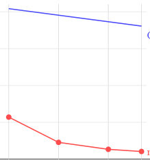
<figcaption class="paper-figure-caption"><b>Fig 1.</b> Figure 1: The O(N2) wall and its removal. The naive attention kernel’s throughput collapses with prompt length (114 →21 tok/s); the per-head cuBLAS rewrite — writing scores into the pre-existing attention buffer, zero new device memory — is nearly flat (408 →361 tok/s). A 2k-token benchmark alone would never have shown the wall.</figcaption>
</figure>
<figure class="paper-figure-card">
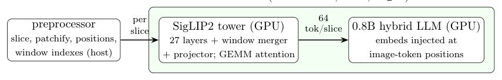
<figcaption class="paper-figure-caption"><b>Fig 2.</b> Figure 2: Production pipeline. The host preprocessor reproduces the reference’s slicing and index arithmetic (calling the reference operator for bucketization, Section 4.2); the resident tower encodes each slice independently (16× compression); the language engine replaces image- placeholder tokens with the tower’s embeddings during prefill.</figcaption>
</figure>
</div>
<p><strong>Summary.</strong> This paper details the engineering feat of running a modern, multimodal AI assistant entirely on an outdated 2011 GPU. The authors achieved this by rewriting core computational kernels, particularly the attention mechanism, to leverage vendor-optimized matrix multiplication routines. This demonstrates advanced low-level hardware optimization for state-of-the-art AI models.</p>
<p><strong>Why it may be interesting.</strong> Not directly relevant</p>
<details>
<summary>Detailed structure</summary>
<p><strong>Main problem.</strong> To deploy a modern, large multimodal assistant model entirely on the GPU using severely constrained, legacy hardware.</p>
<p><strong>Main result.</strong> The authors successfully achieved an all-GPU inference pipeline for MiniCPM-V-4.6, significantly boosting prefill throughput by rewriting attention kernels to use vendor GEMM calls.</p>
<p><strong>Method.</strong> The methodology involved rigorous stage-validated porting of vision and language components to CUDA, coupled with low-level kernel optimization (e.g., chunked recurrence, GEMM reformulation) for the legacy GPU architecture.</p>
<p><strong>Model / system.</strong> The system uses MiniCPM-V-4.6, which combines a SigLIP2 vision encoder and a gated delta-net language backbone. The entire computation is constrained to run on an NVIDIA Tesla C2075 (Fermi, 6GB).</p>
<p><strong>Key observables.</strong> End-to-end image question answering time (1.7s); Prefill throughput improvement from naive $\mathcal{O}(N^2)$ scaling to a flat profile ($\sim 360$ tok/s at 10k tokens).</p>
<p><strong>Important parameters / regimes.</strong> Hardware: Fermi GPU (sm_20, 6GB); Model Size: MiniCPM-V-4.6; Context Length: up to 10k tokens.</p>
<p><strong>Assumptions / limitations.</strong> The performance ceiling and bug locations are only reliable when measured physically on the target hardware, not through abstract reasoning.</p>
<p><strong>Figures summary.</strong> Figures illustrate the dramatic speedup of prefill throughput (tok/s) and wall-clock time for varying prompt lengths when switching from naive attention to GEMM attention, showing a restored linear scaling profile.</p>
<p><strong>Paper structure.</strong> The paper details achieving all-GPU residency first, then optimizes three core components: projections via vendor BLAS calls; recurrent layers via chunked delta-rule rewrite; and the vision side porting/attention kernel optimization for long context handling.</p>
</details>
<details>
<summary>Abstract</summary>
<p>A companion study ran a 35B mixture-of-experts model on a 2011 NVIDIA Tesla C2075 (Fermi, sm_20, 6GB) as a GPU-prefill/CPU-decode hybrid, because the 4-bit model did not fit in device memory (arXiv:2606.24031). This report keeps the hardware and asks what a model that fits can do: we deploy MiniCPM-V-4.6, a modern multimodal assistant pairing a SigLIP2 vision encoder and window-attention merger (16x visual token compression) with a compact hybrid gated-delta-net backbone, entirely on the GPU. Three results. (i) An all-GPU engine built on measured foundations: projections that dequantize 8-bit weights once and call the vendor SGEMM still in the last Fermi toolchain (64% of FP32 peak; our best hand-written GEMM hit 37%, wrongly called the ceiling); a chunked delta-rule rewrite of the recurrent layers, 2.8x faster than the sequential scan once attribution exposed one bad kernel; and a measured negative: 4-bit weights make decode slower than 8-bit here, since Fermi issues nibble-unpacking shifts at half rate. (ii) The vision side is a port with a proof obligation: we translate tower, merger, and projector to sm_20 CUDA, validating every stage against a locally generated reference forward (full tower 1.4e-5). One failure, position-embedding bucketization differing on exact rational ties, generalizes to a rule: float tie-breaking in index arithmetic is implementation-defined; call the reference operator, do not reimplement it. (iii) Long context exposes an O(N^2) wall short benchmarks hide: prefill falls from 114 tok/s at 2k tokens to 21 at 10k in a naive attention kernel; per-head vendor-GEMM calls writing into the existing score buffer (zero extra memory) restore a flat profile (408 at 2k, 361 at 10k; 17x), verified by exact needle retrieval from 60% depth. The same rewrite cuts image encoding 6x, to 0.93s. The system answers an image question end-to-end in 1.7s.</p>
</details>
<p><sub><a href="#top">↑ back to top</a></sub></p>
</details>

<hr>
<p>
<a href="index.html">← Index</a>
 · <a href="papers_06.html">← Previous</a>
</p>
<hr>

</body>
</html>
